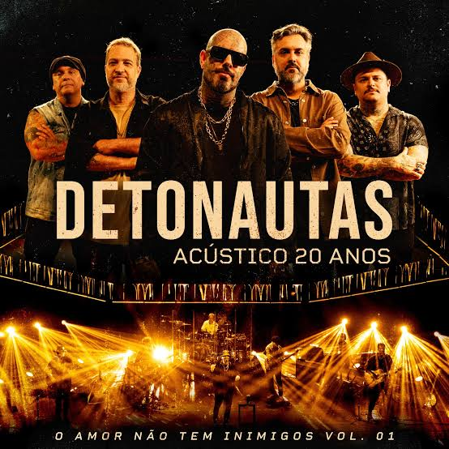

Detonautas
Uma banda de Rock formada no Rio de Janeiro
.jpg)
Sobre os anos iniciais da banda
Detonautas, originalmente chamada Detonautas Roque Clube, é uma banda brasileira de rock formada em 1997, no Rio de Janeiro. O grupo ficou conhecido por misturar rock com elementos de pop-rock e por letras que abordam temas como amor, problemas sociais, violência e política. Em 1997, Tico Santa Cruz e Eduardo Simão, conhecido como Tchello, se conheceram de uma maneira bastante incomum para uma banda: através de uma sala de bate-papo na internet. Tico perguntou se alguém sabia tocar algum instrumento, e Tchello respondeu. Tico morava no Rio de Janeiro, enquanto Tchello vivia na Bahia. Depois de conversarem pela internet, os dois se encontraram pessoalmente e começaram a formar a banda. W Wikipédia +1 O próprio nome Detonautas surgiu dessa história: uma combinação das palavras "detonadores" e "internautas". W Wikipédia Ainda em 1997, Renato Rocha entrou para a banda. Inicialmente pretendia tocar teclado, mas acabou assumindo a guitarra. Em 1999, Rodrigo Netto entrou para o grupo; em 2000, foi a vez do baterista Fábio Brasil; e, em 2001, o DJ Cléston completou a formação que ficaria conhecida como a formação clássica dos Detonautas. D Dicionário MPB +1 Depois de anos tocando em bares e espaços alternativos e de produzir materiais de forma independente, a banda começou a ganhar destaque. Em 2001, foi reconhecida como uma das revelações do festival MADA, em Natal. No ano seguinte, assinou com a Warner Music e lançou seu primeiro álbum, Detonautas Roque Clube, em 2002. D Dicionário MPB +1 O primeiro disco trouxe músicas que se tornariam grandes sucessos, como "Outro Lugar", "Quando o Sol Se For" e "Olhos Certos". Em 2002, o grupo ainda conseguiu abrir os shows do Red Hot Chili Peppers no Rio de Janeiro e em São Paulo. F Folha de S.Paulo +1 Em 2004, a banda lançou Roque Marciano, seu segundo álbum, que ultrapassou 100 mil cópias vendidas e recebeu certificação de disco de ouro. W Wikipédia "A gente formou a banda em 1997 e levou cinco anos até chegar em uma gravadora." — Tico Santa Cruz
Curiosidades da banda:
- A banda nasceu através de uma conversa na internet, em uma época em que a internet ainda era dominada pela conexão discada.
- O nome Detonautas é uma junção de "detonadores" + "internautas".
- O primeiro show da banda aconteceu em um luau no Posto 8, em Ipanema, no Rio de Janeiro. D Dicionário MPB
- "Quando o Sol Se For" fez parte da trilha sonora da novela Malhação em 2003.
- O grupo também é conhecido por abordar questões políticas e sociais em suas músicas, especialmente em trabalhos mais recentes.

Mais informações:
Você pode conhecer mais sobre a banda clicando aqui